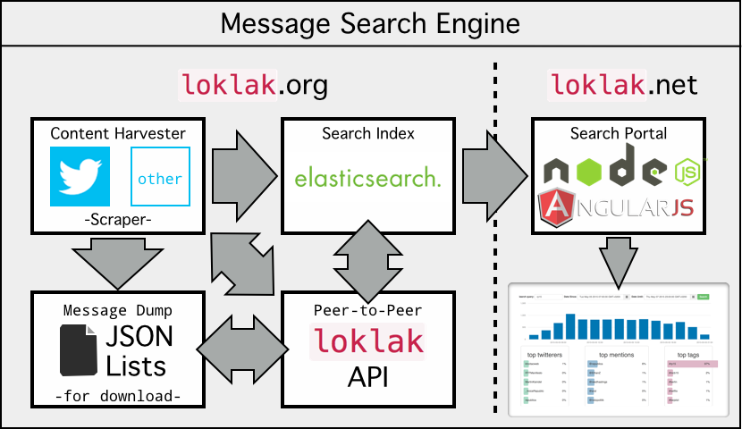

loklakThis is the front-end of loklak, an application which is able to collect and analyse messages from various sources, including twitter. The application is divided into two parts: loklak.net, the front-end (these pages) and loklak.org, the search- and collecting back-end.
The back-end is not only able to collect millions of messages anonymously from twitter, it can also distribute the collection workload into a peer-to-peer network. The back-end also stores the messages into an elasticsearch search index and into a downloadable message dump which can be imported into fresh, new loklak peers. The front-end uses a simple api to retrieve messages and mass-message statistics. This front-end (these pages) are made with angular.js and node.js
This software is free and can be downloaded from the loklak github project
If you like to be anonymous when searching things, want to archive tweets or messages about specific topics and if you are looking for a tool to create statistics about tweet topics, then you may consider loklak. With loklak you can do:
loklak usersTwitter shortens all links, also already pre-shortened links again. We remove the shortening of almost all links in the tweets and reveal the original URL the user has attached to their tweets. This is very important when archiving tweets because shorteners may not be available in the future but it gives you another privacy advancement because the shortener services cannot track you for their purposes (yes there are business models on that). loklak can even de-shorten recursively, multi-shortened links.